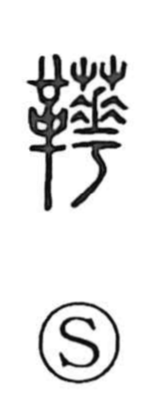

靴

Uncategorized
Kun: kutsu, kawagutsu | On: ka
shoes ・ boots
Explanation
A phonetic–semantic character: the leather element 革 points to a leather article, while 化 serves as the phonetic, indicating the on reading ka. In origin it referred to soldiers’ boots. The Sui Shu’s Record of Rituals notes that such footwear belonged to military dress and was not worn when appearing before high officials such as the chancellor, as that would be discourteous. In ancient Japan, this kind of leather footwear was known as kanokutsu, deer-leather shoes.